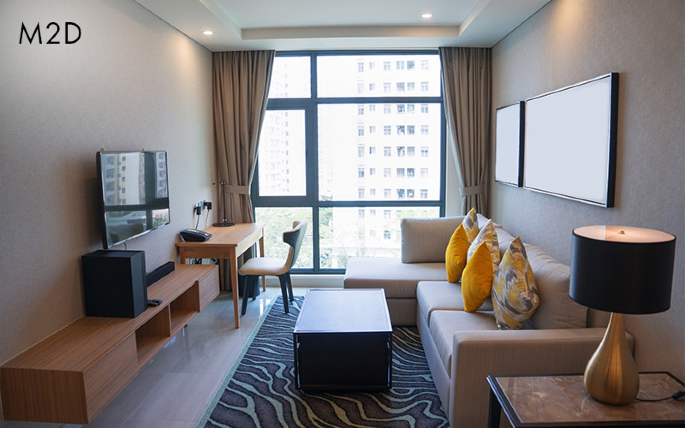
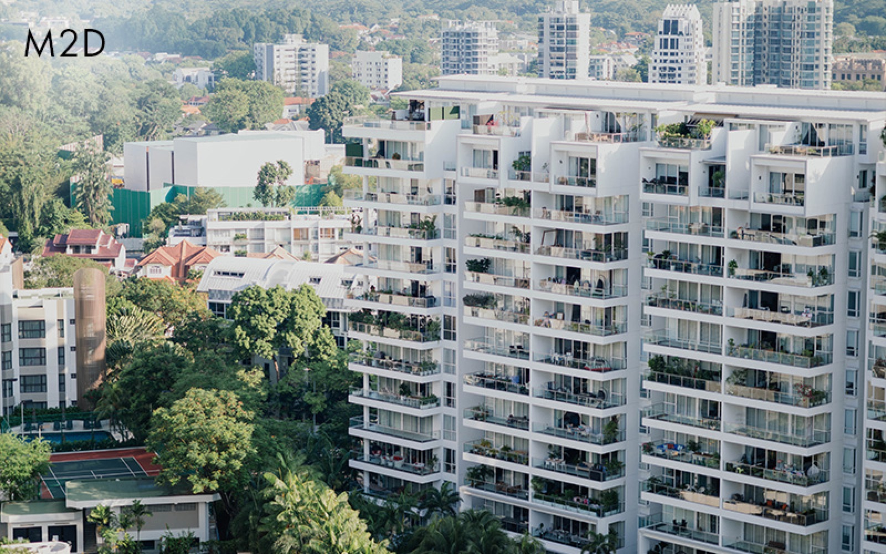
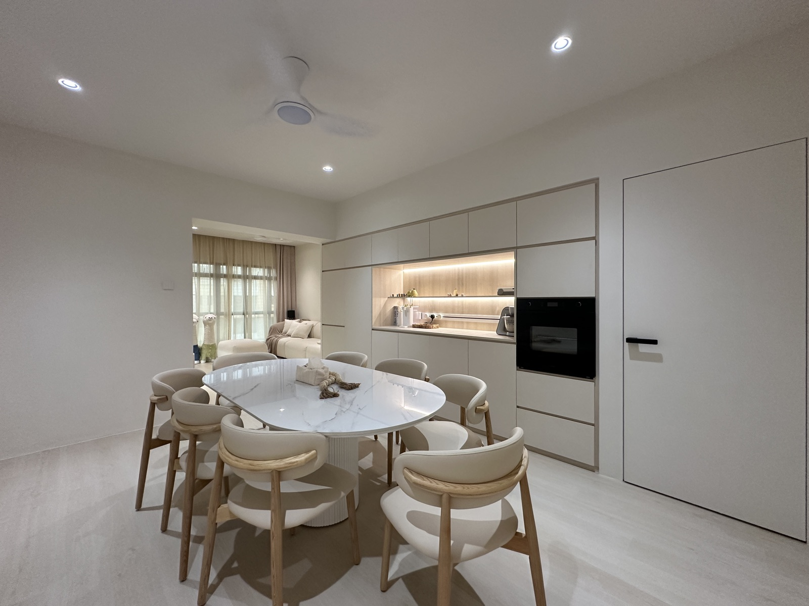
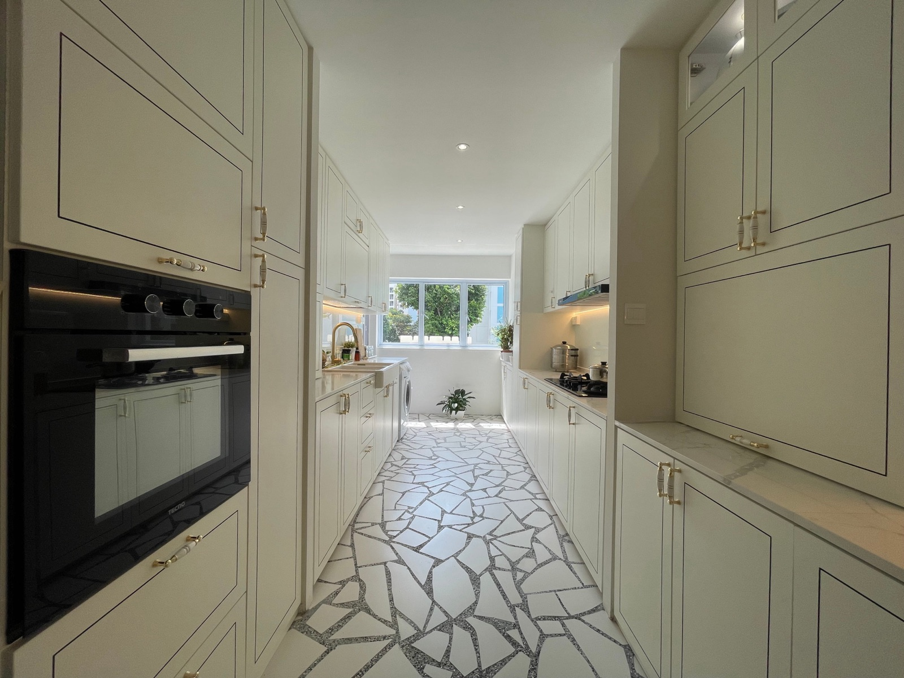
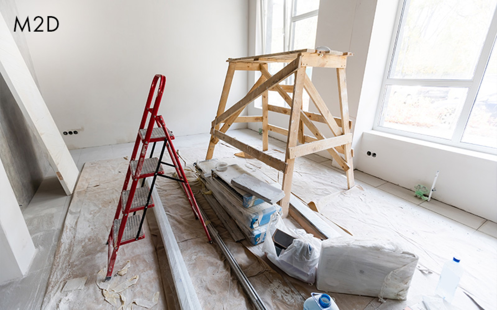
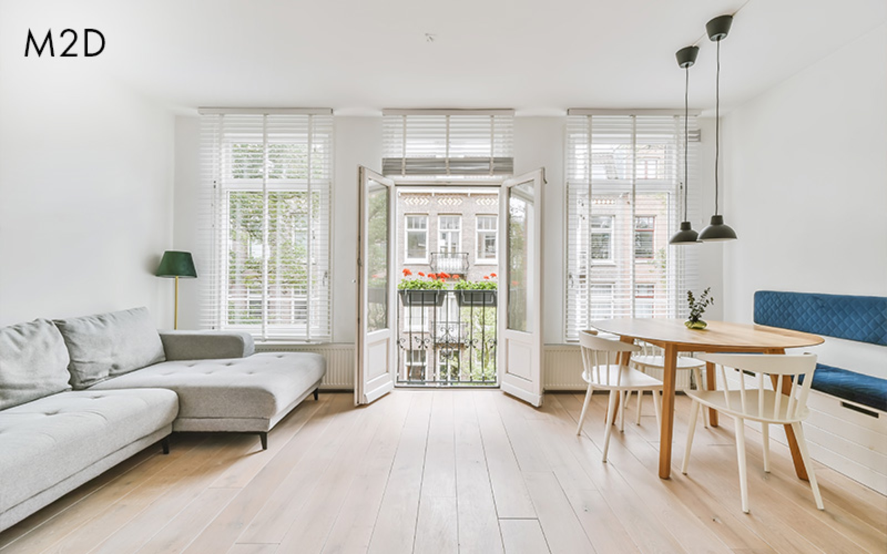
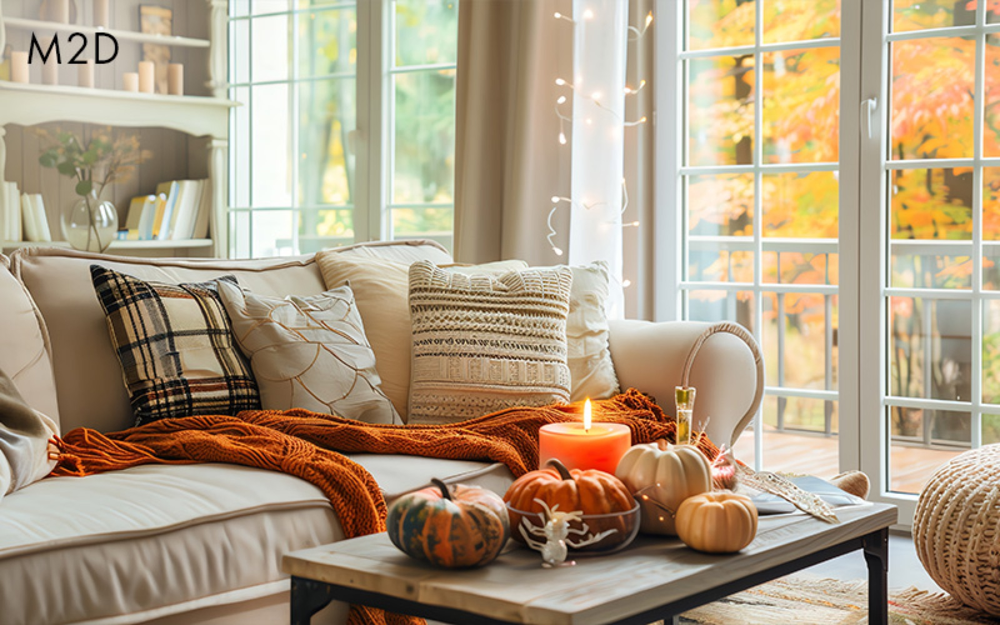
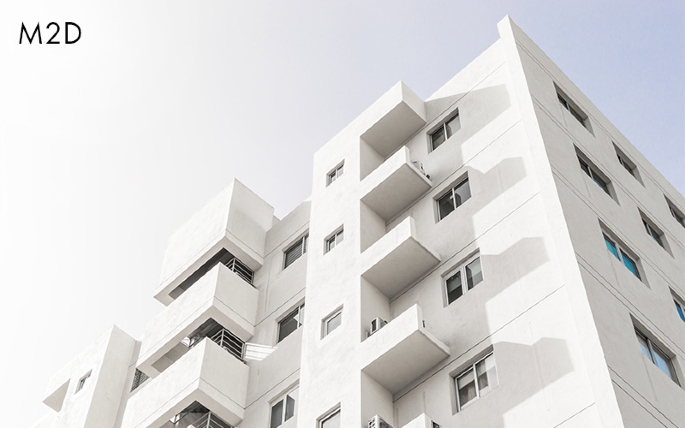
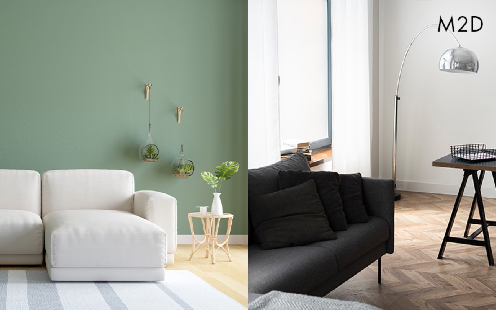
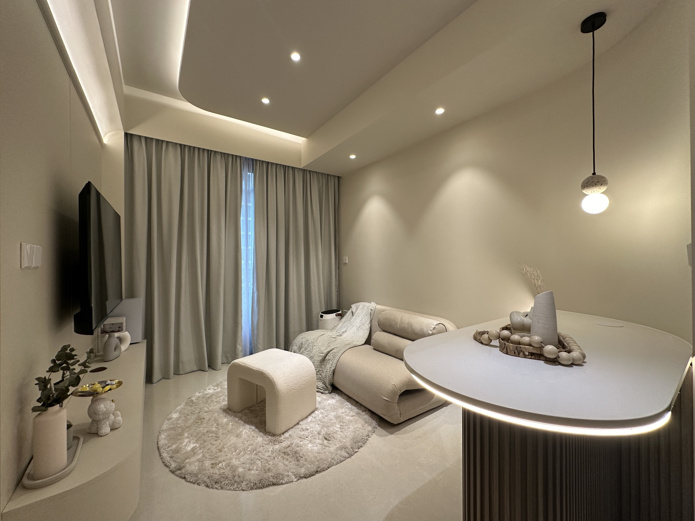

Blog
Stay updated with the latest trends. Whether you are a design enthusiast or a homeowner looking for fresh ideas, you will find practical content to bring your vision to life.

Japandi vs Scandinavian Design: Form, Function, and Flow
Discover the differences between Japandi and Scandinavian design and explore how both styles create intentional living spaces through form, function, and flow.

A Guide on the Key Features of Contemporary Interior Design
Explore contemporary interior design and understand the key difference between modern and contemporary design in style, materials, and overall aesthetic.

How to Blend Both Wabi-Sabi and Japandi Interior Styles
Wabi-sabi and Japandi interiors are similar in philosophy, but different in approach. Learn how you can combine the best of both to create a refined sanctuary.

Colour Schemes for Scandinavian Interior Design in HDBs
From warm, earthly hues to cool, neutral tones, check out this article for a guide on picking out the right colours for a Scandinavian HDB interior design.

Fitting a Walk-In Wardrobe into Your HDB Master Bedroom
A HDB walk-in wardrobe seems out of reach, but entirely doable with the right design strategies. Here are some ways you can fit one into your master bedroom.

Home Design: When to Use Natural and Artificial Lighting
Lighting is vital to home design, and knowing how to utilise both natural light and artificial lighting can help create a balanced space. Read on to learn more.

Small Condo Design Ideas: How to Maximise Every Square Inch
Many condominiums are small, but it doesn’t mean you should live in discomfort. Check out these small condo design ideas that incorporate small design choices.

What Goes into a 4 Room HDB Resale Renovation?
Learn what goes into a 4-room HDB resale renovation, from hacking and rewiring to layout changes, storage planning, and budgeting tips.

5 Room BTO Interior Design Ideas for Space & Function
Explore 5 room BTO interior design ideas that balance space, style, and function. Get layout tips, storage solutions, and renovation insights for your home.

5 Zoning Strategies for Narrow Terrace House Designs
Narrow terrace house designs often come with the challenge of blending narrow layouts together seamlessly. Here are 5 zoning strategies to help you out.

Minimalist Interior Design for HDBs & Condos
Discover how minimalist interior design creates functional homes for HDB flats and condominiums through thoughtful layouts and refined design.

How to Stay Compliant with HDB Renovation Guidelines
From submitting a properly-filled renovation permit to engaging a registered contractor, learn how you can stay compliant with HDB renovation guidelines.

Pros and Cons of an Open Floor Plan in Modern Homes
Open floor plans are very popular in modern home design, but are they right for you? Here’re some of their pros and cons to help you make an informed decision.

A Guide to Creating a Gorgeous and Cosy Living Room
Your living room is a place for you to unwind, host guests, and watch TV. Here are some design tips to help you create a gorgeous and cosy living room.

Interior Design Tips to Make Small Spaces Look Bigger
From using light colours to incorporating mirrors, check out these helpful interior design tips that will help make small spaces look and feel larger.

A Guide to Optimising the Lighting of Your HDB Flat
HDB lighting is an important factor that will determine the ambience and functionality of your home. Here’s how you can optimise your lights for each room.

Factors That Impact the Resale Value of a HDB Flat
From size and layout to location, learn what influences HDB resale value and how you can maximise the value of your flat when it’s time to put it up for sale.

What to Consider in a Bedroom Interior Design for Couples
Planning a bedroom interior design as a couple? Learn how to align your style direction, balance preferences, and create a shared space that feels like home.

The 60-30-10 Rule: An Effective Way to Transform Any Room
The 60-30-10 rule is widely used in many professional renovation projects. Learn how this age-old interior design principle helps create stunning spaces.

Comparing Minimalist & Industrial Interior Designs
From colour schemes to furniture styles, learn more about the main differences between two highly popular trends: minimalist and industrial interior design.

Next step to
your dream home.
Book a consultation. Share your pain points, lifestyle and wishlist, and we will advise, plan and build.
Book a consultation